|
|
| soft corals text index | photo index |
| Phylum Cnidaria > Class Anthozoa > Subclass Alcyonaria/Octocorallia > Order Alcyonacea > Family Nephtheidae |
| Asparagus
flowery soft coral Nephthea sp.* Family Nephtheidae updated Nov 2019 Where seen? This large purplish flowery soft coral is commonly seen on our Southern shores. When out of water with the polyps retracted, the tips of this soft coral looks like asparagus spears. Usually among living hard corals on the reef flats. Features: Colony bushy 15-20cm to 50cm. Colony is branched with thick study 'stems' emerging from a stout central 'trunk'. The 'stems' may be white, lilac or purple. Polyps tiny (about 0.5cm) with eight beige or brown branched tentacles. The polyps appear in clusters only at the tips of the branches, the rest of the colony smooth. No obvious large spikes among the polyps. When the polyp tentacles are retracted, the body column forms little lumps, the entire colony may appear purplish or lilac, and the rounded lumps give the 'stems' the appearance of asparagus spears. With the polyps tentacles expanded, the colony appears brown and fluffy. The animals harbour symbiotic algae (zooxanthellae) and thus can be found in clearer water. Sometimes confused with Smooth flowery soft corals (Litophyton sp.). It may also resemble the Fire anemone which, unlike the soft coral, has white stripes radiating from the centre of the oral disk. Flowery friends: Sometimes, tiny transparent red nose shrimps and tiny colourful brittle stars can be seen on this soft coral. |
 Brown when tentacles are expanded, purple when tentacles are retracted. Pulau Hantu, Apr 04 |
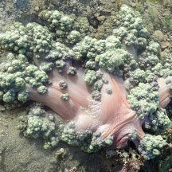 Pastel colours suggest a stressed colony. Terumbu Semakau, May 19 |

|
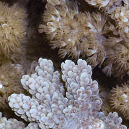 Expanded tentacles and contracted tentacles. Pulau Hantu,Mar 07 |
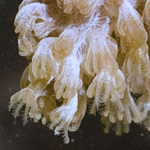 Eight brown branched tentacles. Pulau Semakau, Aug 11 |
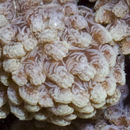 Tentacles retracted, body column forms lumps. No spikes among the polyps. Pulau Hantu, Jan 06 |
*ID awaits confirmation. Species are difficult to positively identify without close examination.
On this website, they are grouped by external features for convenience of display.
| Asparagus flowery soft corals on Singapore shores |
On wildsingapore
flickr
|
| Other sightings on Singapore shores |
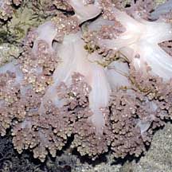 Pulau Berkas, May 10 |
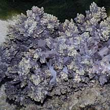 Terumbu Salu, Jan 10 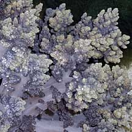 |
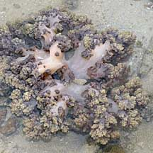 Terumbu Berkas, Jan 10 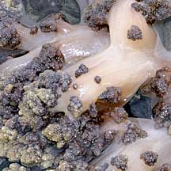 |
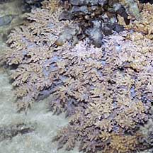 Terumbu Salu, Aug 10 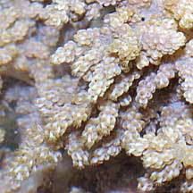 |
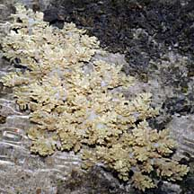 Bleaching. Terumbu Salu, Jun 10 |
|
Links
References
|